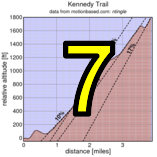

|
 |
 |
|
Kennedy Trail
|
Time to get dirty! Another self-timed week: ride when you want, using self-timing or GPS! Please respect all other preserve users!
| Results are closed! |
| results? | right here! |
| profile |  |
| distance | 3.86 miles (6.2 km) |
| climbing | 1878 ft (572 meters) |
| grade | 9.25% |
| where? | see below |
| when? | 17 Nov 2012 |
| what time | registration none to none climb starts @ any time Saturday |
| Result | Results are closed |
| waiver | Please fill one out before the climb! |
| how? |  |
| how much? | $10 (free for juniors and those with volunteer credit) |
| why? | why not? |
| coordinator | |
| volunteers | sign up! |
| aerial view | Speedbob Nate |
| weather | Weather Underground |
| deja-vu? | New! |
| BikeMap | |
Sorry, folks! Our insurance requires all riders wear helmets during the climb, and we follow the USA Cycling rule against ear buds or other head phones. Rock to tunes before the climb, perhaps, but we need riders to pay attention to what's happening during the climb...
You're on your own this week! Do the climb on your own. Feel free to ride with others, but groups must be smaller than 20 riders, per Open Space regulations. There are other trail users, so please follow the rules of the trail, yielding to all pedestrians and equestrians. If you're forced to come to a complete stop to yield right of way, let us know. If it's early enough in the ride you're not too fatigued, you can also always head back down the hill and try again if conditions aren't right for a fast attempt the first time.
Timing begins at the porta-potty at the trailhead. See it in Streetview here. From there you ride up the hill. There is a first summit, then a brief descent, then the trail climbs further to a large tree. The tree trunk is where the timing for the climb ends, at the obvious top of the hill. If you use GPS, please ride past the tree so with position errors you will still avoid getting idle time included in your result. More refinement on the timing will be described on this web page as the climb approaches.
The ride must be done on Saturday, any time. A form will be posted to enter either ride time (porta-potty to top) or Strava activity ID or URL. If you go with Strava, Low-Key's super-proprietary timing code will be used to extract your time, not a Strava segment, so post a URL for the whole ride, not just the segment. Make sure to do a rolling start from before the porta-potty, not a standing start from that position, since the GPS may decide you had already crossed the "starting line" by that point. Feel free to ride as many times as you want on Saturday: the code will take the shortest time from start to finish.
There's a nice description of the climb on MTBGuru.
Note this is an optional climb (you only need four results during the series to get a maximal score), so you're on your own for this one. Please use discretion and courtesy in climbing the hill! You're responsible for your own decisions with regard to weather and conditions.
No volunteers are needed this week, since it's a self-ride. Please consider volunteering for one of our fully supported climbs using our volunteer form! Thanks!!!
Low-Key is all about a group of friends riding up a hill together. It's like any other informal group ride, except we time you to the top and report the results on our web site. But we have no road closures, no lead vehicle, no follow vehicle. We are traffic, sharing the roads with other traffic, following the laws and courtesy which applies to traffic. Think of it as a human-assisted Strava. We're each responsible for our own actions out there, on and off the bike, both as users of the road as as courteous visitors to the neighborhoods we pass through. "Ceci n'est pas un race".
{kind=link}